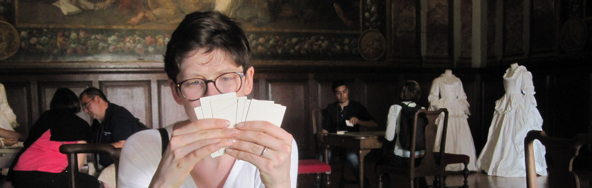

Hi, I'm Amy R. Boyd, a Ph.D. student in the English department at the University of Virginia. I specialize in nineteenth-century British literature, especially its intersections with science and technology. I am currently a Praxis Fellow in the Scholars' Lab at UVa and teach a first-year writing course about the rhetoric of food. You can contact me at she@amyrboyd.com or on Twitter (where I often tweet with my class, #enwrfood) @MsABoyd.